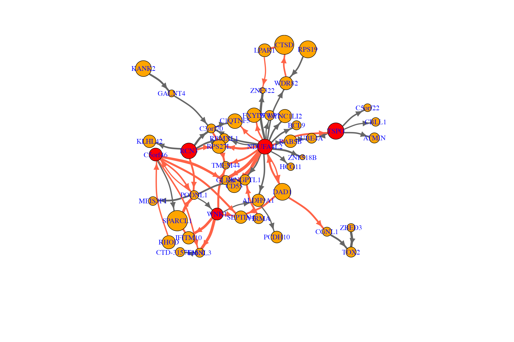
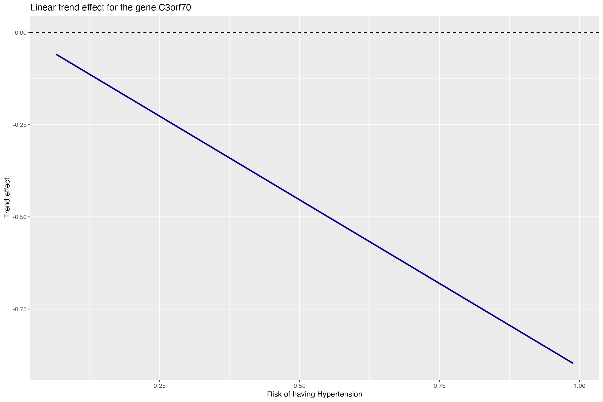
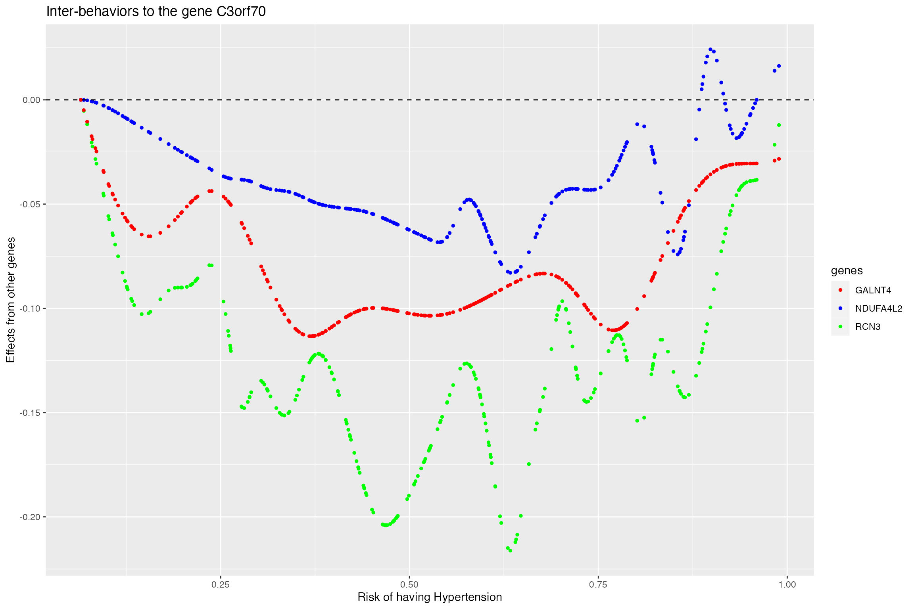
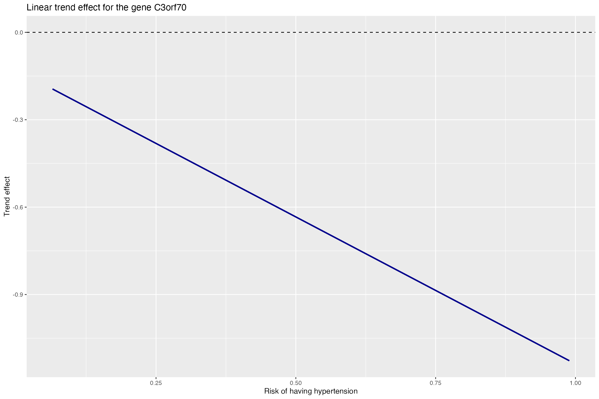
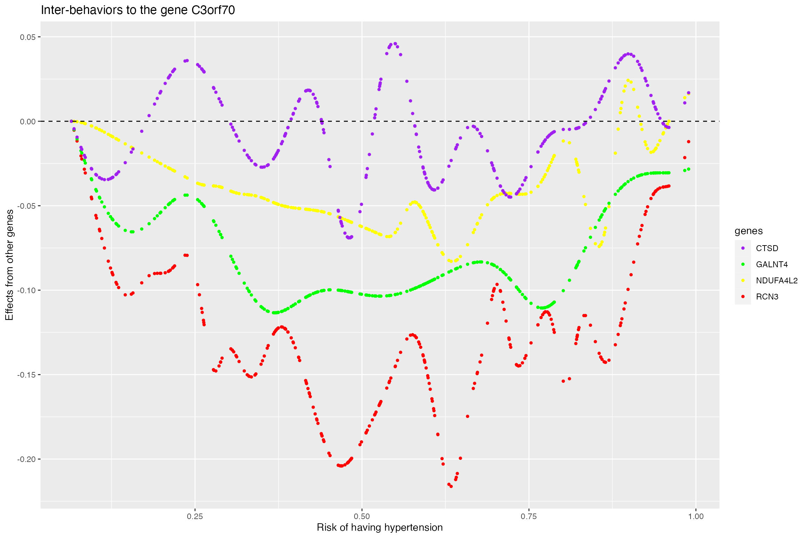

DRDNetPro is a bio-protocol for recovering disease risk-associated pseudo-dynamic networks (DRDNet) from steady-state data. It incorporates risk prediction model of having certain disease, a varying coefficient model, multiple ordinary differential equations, and group lasso estimation to learn a series of networks. This tutorial will provide detailed information for the third step of implementing the DRDNet.
This tutorial provides some demo codes to visualize the results from network learning in Tutorial 2. If the user hasn’t gone through the Tutorial 2, please visit Tutorial 2 for the second step of training the network model.
To begin with, load the following packages
The data we need to use in this tutorial is network.output, data.list.t3, and 85_gene_name_information
##need data
network.output<-readRDSFromWeb("https://github.com/chencxxy28/DRDNetPro/raw/main/vignettes/data/network.output.rds")
data.list.t3<-readRDSFromWeb("https://github.com/chencxxy28/DRDNetPro/raw/main/vignettes/data/data.list.t3.rds")
gene_exact_names<-read.csv("https://github.com/chencxxy28/DRDNetPro/raw/main/vignettes/data/85_gene_name_information.csv")Extract detailed data about the gene expression, covariate vector, imputed agent, self-node size for baseline, self-node size for covariate effect, overall self-node size, gene interaction effects from the baseline, gene interaction effects from the covariate, overall gene interaction effects, smoking effect, trend effect for baseline, trend effect from covariate.
data_observe<-data.list.t3$data_observe
x_cov<-data.list.t3$x_cov
agent<-data.list.t3$agent
self_size<-network.output$self_size
self_size_cov<-network.output$self_size_cov
self_size_all<-network.output$self_size_all
gene_whole_cov<-network.output$gene_whole_cov
gene_whole_all<-network.output$gene_whole_all
gene_whole<-network.output$gene_whole
smoking_effect_all<-network.output$smoking_effect_all
trend_base_all<-network.output$trend_base_all
trend_smoking_effect_all<-network.output$trend_smoking_effect_allTo visualize the pseudo dynamic network given an agent (disease risk)
value, a useful tool is the igraph package. It allows the
self-designed network structure. More detailed tutorial about igraph can
be found in igraph.
The following is a demo code for visualizing the recovered baseline
network for non-smoking group, where the agent (risk of having
hypertension) is changing from 0 (no risk) to 0.86 (high risk).
##network for x=0 at i=250 after some tuning
tunned_value<-0.03
for (i in c(250))
{
tunning_index<-apply(gene_whole_all,1,function (x) ifelse((abs(x[i+2]))>=tunned_value,1,0))
gene_whole_all_tuned<-gene_whole_all[which(tunning_index==1),]
tunning_index<-apply(gene_whole,1,function (x) ifelse((abs(x[i+2]))>=tunned_value,1,0))
gene_whole_tuned<-gene_whole[which(tunning_index==1),]
dim(gene_whole_tuned)
unique(gene_whole_tuned[,2])
table(gene_whole_tuned[,2])
#geneate link data with 25th tissue
links_gene<-gene_whole_tuned[,c(1,2,i+2)]
colnames(links_gene)<-c("from","to","tissue_name")
links_gene<-as.data.frame(links_gene)
links_gene$edge_type<-ifelse(gene_whole_tuned[,i+2]>0,1,2)
rownames(links_gene)<-rep(1:nrow(links_gene))
self_index_all<-unique(c(gene_whole_all_tuned[,1],gene_whole_all_tuned[,2],gene_whole_tuned[,1],gene_whole_tuned[,2]))
self_index<-unique(c(gene_whole_tuned[,1],gene_whole_tuned[,2]))
#nodes_gene<-data.frame(cbind(self_index,self_size[self_index,(i+1)]))
nodes_gene<-data.frame(self_size[self_size[,1] %in% self_index,c(1,(i+1))])
colnames(nodes_gene)<-c("id","self_weight")
#nodes_gene<-data.frame(self_size[,c((i+1))])
#colnames(nodes_gene)<-c("self_weight")
nodes_gene$node_type<-ifelse(nodes_gene$id %in% c(39,40,48,64,76),1, ifelse(nodes_gene$id %in% (self_index),2,3))
#nodes_gene$node_type<-ifelse(nodes_gene$id %in% self_index,3,4)
net <- graph.data.frame(links_gene, nodes_gene, directed=T)
class(net)
net
# It's easy to access nodes, edges, and their attributes:
E(net)
V(net)$self_weight
E(net)$tissue_name
V(net) #total 47 clusters included in the network
# Now we should be able to do this:
#plot(net, edge.arrow.size=.2,vertex.label.family="Arial Black" )
#adjust size of nodes and width of edges
colrs_nodes <- c("red","orange","gray")
V(net)$color <- colrs_nodes[V(net)$node_type]
colrs_edge<-c("tomato","gray40")
E(net)$color <- colrs_edge[E(net)$edge_type]
V(net)$size <- (V(net)$self_weight)^0.7*4
E(net)$width <- (abs(E(net)$tissue_name))^0.4*10
#change coordinate to separate the nodes
#set.seed(41414343)
net.bg<-net
set.seed(4151320)
l<-layout_nicely(net.bg)
l <- layout.norm(l, ymin=-1, ymax=1, xmin=-1, xmax=1)
l[20,]<-c(-0.9,0.1)
l[16,]<-c(0.7,-0.5)
l[46,]<-c(-0.7,-0.7)
l[8,]<-c(0.7,-0.7)
#l<-layout_in_circle(net.bg)
#l<-layout_as_star(net.bg,center=V(net)[1:3])
#l<-layout_as_bipartite(net.bg)
#l<-layout_on_grid(net.bg)
#l<-layout_on_sphere(net.bg)
#l<-layout_with_sugiyama(net.bg)
#l<-layout_with_dh(net.bg)
# Normalize them so that they are in the -1, 1 interval:
#l <- layout.norm(l, ymin=-1, ymax=1, xmin=-1, xmax=1)
gene_names_used<-as.character(gene_exact_names$gene.name[nodes_gene$id])
#gene_names_used[which(gene_names_used=="CTSD\xca")]<-"CTSD"
plot.igraph(net.bg, rescale=F, layout=l,edge.arrow.size=1, edge.curved=.2,vertex.label=gene_names_used,
vertex.label.color="blue",vertex.label.cex=1,mark.border=NA)
}
The following is a demo code for visualizing three recovered covariate-effect (effect caused by smoking) networks, where the agent (risk of having hypertension) is changing from 0 (no risk) to 0.10 (low risk), from 0 (no risk) to 0.42 (moderate risk), and from 0 (no risk) to 0.86 (high risk).
{par(mfrow = c(1, 3))
tunned_value<-0.01
for (i in c(10,100,250))
{
tunning_index<-apply(gene_whole_cov,1,function (x) ifelse((abs(x[i+2]))>=tunned_value,1,0))
gene_whole_cov_tuned<-gene_whole_cov[which(tunning_index==1),]
dim(gene_whole_cov_tuned)
unique(gene_whole_cov_tuned[,2])
table(gene_whole_cov_tuned[,2])
#geneate link data with 25th tissue
links_gene<-gene_whole_cov_tuned[,c(1,2,i+2)]
colnames(links_gene)<-c("from","to","tissue_name")
links_gene<-as.data.frame(links_gene)
links_gene$edge_type<-ifelse(gene_whole_cov_tuned[,i+2]>0,1,2)
rownames(links_gene)<-rep(1:nrow(links_gene))
#self_index_all<-unique(c(gene_whole_tuned[,1],gene_whole_tuned[,2],gene_whole_cov_tuned[,1],gene_whole_cov_tuned[,2]))
self_index_cov<-unique(c(gene_whole_cov_tuned[,1],gene_whole_cov_tuned[,2]))
self_index_all<-self_index_cov
#nodes_gene<-data.frame(cbind(self_index,self_size[self_index,(i+1)]))
nodes_gene<-abs(data.frame(self_size_cov[self_size_cov[,1] %in% self_index_all,c(1,(i+1))]))
colnames(nodes_gene)<-c("id","self_weight")
#nodes_gene<-data.frame(self_size[,c((i+1))])
#colnames(nodes_gene)<-c("self_weight")
nodes_gene$node_type<-ifelse(nodes_gene$id %in% (self_index_cov),3,4)
net <- graph.data.frame(links_gene, nodes_gene, directed=T)
class(net)
net
# It's easy to access nodes, edges, and their attributes:
E(net)
V(net)$self_weight
E(net)$tissue_name
V(net) #total 34 clusters included in the network
# Now we should be able to do this:
#plot(net, edge.arrow.size=.2,vertex.label.family="Arial Black" )
#adjust size of nodes and width of edges
colrs_nodes <- c("red", "green","orange","gray")
V(net)$color <- colrs_nodes[V(net)$node_type]
colrs_edge<-c("tomato","gray40")
E(net)$color <- colrs_edge[E(net)$edge_type]
V(net)$size <- (V(net)$self_weight)^0.7*4
E(net)$width <- (abs(E(net)$tissue_name))^0.4*10
net.bg<-net
set.seed(4151320)
l<-layout_nicely(net.bg)
l <- layout.norm(l, ymin=-1, ymax=1, xmin=-1, xmax=1)
# Normalize them so that they are in the -1, 1 interval:
l <- layout.norm(l, ymin=-1, ymax=1, xmin=-1, xmax=1)
gene_names_used<-as.character(gene_exact_names$gene.name[nodes_gene$id])
gene_names_used[which(gene_names_used=="CTSD\xca")]<-"CTSD"
plot.igraph(net.bg, rescale=F, layout=l*0.9,edge.arrow.size=1, edge.curved=.2,vertex.label=gene_names_used,
vertex.label.color="blue",vertex.label.cex=1.5,mark.border=NA)
}
}Select the gene of interest (C3orf70) and extract related results
#select a gene: C3orf70
index.gene<-which(gene_exact_names$gene.name=="C3orf70")
#extract information about the target gene and affecting genes
gene_select_data<-gene_whole[gene_whole[,2]==index.gene,][,-c(1,2)]
affecting_genes<-gene_whole[gene_whole[,2]==index.gene,][,1]
magnitude<-apply(gene_select_data,1,function (x) mean(abs(x)))
gene_select_data_tuned<-gene_select_data[magnitude>=0.02,]
affecting_genes_tuned<-affecting_genes[magnitude>=0.02]
name_affectgene<-gene_exact_names$gene.name[affecting_genes_tuned]Plot the trend effect for the non-smoking group as the agent increases (risk of having hypertension). It can be seen that there is a decreasing trend of expression.
#plot trend effect
trend_data<-as.data.frame(cbind(trend_base_all[,index.gene],agent))
colnames(trend_data)<-c("trend_effect","hypertension_probability")
trend_data$line<-"trend_effect"
head(trend_data)## trend_effect hypertension_probability line
## base_int -0.05885590 0.06485799 trend_effect
## int_row -0.06247214 0.06884301 trend_effect
## int_row.1 -0.06655976 0.07334748 trend_effect
## int_row.2 -0.07189403 0.07922575 trend_effect
## int_row.3 -0.07298267 0.08042540 trend_effect
## int_row.4 -0.07648075 0.08428021 trend_effect
p1 <- ggplot(trend_data, aes(x=hypertension_probability, y=trend_effect)) +
geom_line(colour = "darkblue",size=1) +geom_hline(yintercept=0, linetype="dashed", color = "black")+
labs(title="Linear trend effect for the gene C3orf70", x="Risk of having Hypertension", y="Trend effect")
p1
Plot the interaction effects from genes to the targeted gene for the non-smoking group as the agent increases (risk of having hypertension). It can be seen that three genes are inhibiting the expression of the gene C3orf70
#plot interaction effects
gene_select_data_tuned_new<-c(t(gene_select_data_tuned))
gene_select_data_tuned_new<-cbind(gene_select_data_tuned_new,rep(agent,time=3))
colnames(gene_select_data_tuned_new)<-c("effects","hypertension_probability")
gene_select_data_tuned_new<-as.data.frame(gene_select_data_tuned_new)
gene_select_data_tuned_new$genes<-rep(name_affectgene,each=length(agent))
p2 <- ggplot(gene_select_data_tuned_new, aes(x=hypertension_probability, y=effects, color=genes)) +
geom_point(size=1,alpha=rep(c(1,1,1),each=length(agent)))+scale_color_manual(values=c("red", "blue","green")) +geom_hline(yintercept=0, linetype="dashed", color = "black")+
labs(title="Inter-behaviors to the gene C3orf70", x="Risk of having Hypertension", y="Effects from other genes")
p2
Select the gene of interest (C3orf70) and extract related results. It can be seen that the effect from smoking is -0.13.
#for smoking group
gene_select_data<-gene_whole_all[gene_whole_all[,2]==index.gene,][,-c(1,2)]
affecting_genes<-gene_whole_all[gene_whole_all[,2]==index.gene,][,1]
magnitude<-apply(gene_select_data,1,function (x) mean(abs(x)))
gene_select_data_tuned<-gene_select_data[magnitude>=0.02,]
affecting_genes_tuned<-affecting_genes[magnitude>=0.02]
name_affectgene<-gene_exact_names$gene.name[affecting_genes_tuned]
smoking_effect_all[index.gene]## base_int
## -0.1289786The above value indicates that smoking will inhibit the expression of gene C3orf70. Plot the trend effect for the smoking group as the agent increases (risk of having hypertension). It can be seen that there is a decreasing trend of expression.
smoking_effect_size<-trend_smoking_effect_all[,index.gene]+smoking_effect_all[index.gene]+trend_base_all[,index.gene]
trend_data<-as.data.frame(cbind(smoking_effect_size,agent))
colnames(trend_data)<-c("trend_effect","hypertension_probability")
trend_data$line<-"trend_effect"
head(trend_data)## trend_effect hypertension_probability line
## base_int -0.1944357 0.06485799 trend_effect
## int_row -0.1984575 0.06884301 trend_effect
## int_row.1 -0.2030036 0.07334748 trend_effect
## int_row.2 -0.2089362 0.07922575 trend_effect
## int_row.3 -0.2101469 0.08042540 trend_effect
## int_row.4 -0.2140373 0.08428021 trend_effect
#y_limit<-max(trend_data$trend_effect)
p3 <- ggplot(trend_data, aes(x=hypertension_probability, y=trend_effect)) +
geom_line(colour = "darkblue",size=1) +
#coord_cartesian(ylim=c(0,y_limit ))+
geom_hline(yintercept=0, linetype="dashed", color = "black")+
labs(title="Linear trend effect for the gene C3orf70", x="Risk of having hypertension", y="Trend effect")
p3
Plot the interaction effects from genes to the targeted gene for the smoking group as the agent increases (risk of having hypertension). It can be seen, in addition to the three genes detected in non-smoking group, one extra gene is affecting the expression of the gene C3orf70. However, it seems that the effect from CTSD is small and wiggles around zero.
gene_select_data_tuned_new<-c(t(gene_select_data_tuned))
gene_select_data_tuned_new<-cbind(gene_select_data_tuned_new,rep(agent,time=4))
colnames(gene_select_data_tuned_new)<-c("effects","hypertension_probability")
gene_select_data_tuned_new<-as.data.frame(gene_select_data_tuned_new)
gene_select_data_tuned_new$genes<-rep(name_affectgene,each=length(agent))
p4 <- ggplot(gene_select_data_tuned_new, aes(x=hypertension_probability, y=effects, color=genes, group=genes)) +
geom_point(size=1,alpha=rep(c(1,1,1,1),each=length(agent)))+scale_color_manual(values=c("purple", "green","yellow","red","blue")) +geom_hline(yintercept=0, linetype="dashed", color = "black")+
labs(title="Inter-behaviors to the gene C3orf70", x="Risk of having hypertension", y="Effects from other genes")
p4